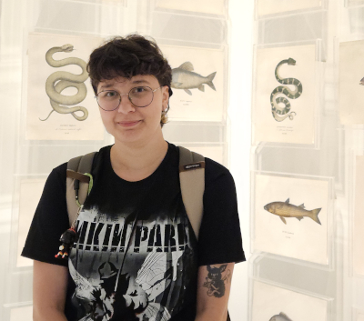

Sobre Mim
Oiê! Meu nome é Isabelly. Minha curiosidade por tecnologia começou ainda no ensino médio, quando tive meu primeiro contato com programação, estudando Arduino e participando da OBR (Olimpíada Brasileira de Robótica), isso me permitiu um primeiro contato com lógica de programação e as primeiras linguagens que tive contato. Atualmente curso Análise e Desenvolvimento de Sistemas e tenho como foco construir uma base técnica forte para conseguir resolver quaisquer problemas que surgirem ao longo da minha carreira. Sou apaixonada por tecnologia e por tudo que envolve criar, aprender e inovar.
Formação Acadêmica
- Graduação em Análise e Desenvolvimento de Sistemas
Centro Universitário Internacional (Uninter) - Em andamento (02/2025 - Atual)